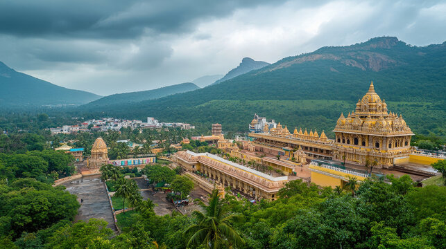
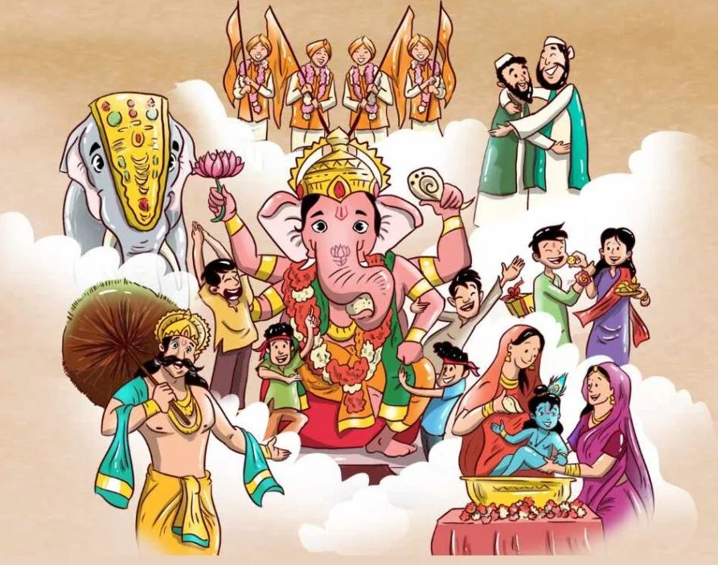

Red Fort

Ancient Temples

Discover India’s rich cultural heritage through monuments, traditions, and history.
🏛 Monuments & Architecture:
India has 44 UNESCO World Heritage Sites including the Red Fort, Qutub Minar,
Khajuraho temples, and Hampi ruins.
🕉 Spirituality & Religion:
Birthplace of Hinduism, Buddhism, Jainism, and Sikhism,
practiced by nearly 80–82% of the population.
🎭 Cultural Traditions:
Ayurveda, Yoga, classical dance forms, traditional music,
diverse languages, and colorful festivals.
📜 Historical Legacy:
From the Indus Valley Civilization to Mughal and colonial architecture,
and post-independence landmarks like Chandigarh’s Capitol Complex.
This monument represents India’s rich cultural and historical heritage.